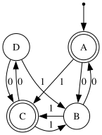
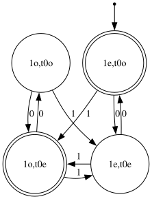

Do you see what language this DFA accepts?

The automaton, drawn better, is exercise 2.6c in Introduction to Automata Theory, Languages, and Computation (Hopcroft and Ullman, 1979). Presumably, a smart human could solve it. Part (a) was trivial. Part (b) is not trivial, but you can reduce the DFA to an NFA by conventional methods. I asked a TA about this part (c). He showed me the conventional method. It didn't work.
Thirty hours later, I tried the conventional method again to get the regexp ((00)*0?1(0*11(11)*)(00)*0?10)(00)*(0?1((0*11(11)*)*(00)*(0?10)?)?)?.
"Describe in English," the textbook had demanded.
That's not English in the slightest.
I stepped thru the automaton by hand to see which small integers it accepted. "Integers" because binary strings represent integers. If leading 0s affect how one uses the bit-strings, they can't be integers. But here, the first 1 after however many leading 0s will always land you at state C. Integers they are.
It turns out the DFA accepts the binary representations of 1, 4, 6, 7, 10, 11, and 13, with a complication at 0.
That is an Integer Sequence.
When life gives you an Integer Sequence, make Integer Sequenceade look it up in the Online Encyclopedia.
The top result was "positions of 1s in the Thue-Morse sequence." That looked absurd, so I checked more terms: 16, 18, 19, 21, 24, 25. It became the only result. Why?
Given the first 2k terms of the Thue-Morse sequence, complement them in the same order to get the next 2k terms. That means term n, with 2k ≤ n < 2k + 1, is the complement of its counterpart n - 2k in the previous block. Subtracting 2k, the greatest power of two you can, is removing the most significant (first) 1 bit. Let's treat the Thue-Morse sequence as a recurrence on bit-strings: TM(1‖n) = ¬TM(n) and TM(0‖n) = TM(n), with the base case TM(0) = 1.
When you recurse down that definition of TM, hit two 1s and the result returns to what it was before. So TM(n) is "n has an even number of 1s."
The OEIS defines the positions of 1s with indices starting at 1. The definitions I worked out above start indices at 0. Even assuming Thue-Morse describes the DFA of exercise 2.6c, it doesn't check that "n has an even number of 1s." It checks that "n - 1 has an even number of 1s." Which suggests the automaton does arithmetic. How is such a small automaton doing arithmetic?
Subtracting 1 is simple enough arithmetic. To decrement a binary number, find the last 1, then complement it and all trailing 0s. E.g. ten is 1010, its last 1 is in the two's place, so we complement that to get 1001, representing nine. That change removes one 1, then adds as many as there were trailing 0s. So the number of 1s in binary n - 1 is the number of 1s in n, plus the number of trailing 0s, minus one. n - 1 has an even number of 1s iff n has an odd number of 1s plus trailing 0s.
There's an exception when you decrement zero. There's no last 1 in ...0000, however long, so you decrement it to get ...1111, i.e. negative one. That has infinitely many 1s, neither even nor odd.
In the well-behaved case, it's easy enough to track parities with a DFA. Make two states, for even and odd, and transition between them whenever you increment the counter. But if you only count the total of 1s and trailing 0s, whenever you hit a run of 1s, you must subtract a now-lost number of "trailing" 0s, now found to not really be trailing. So we track whether the total 1s are even or odd, and whether the trailing 0s are even or odd. That makes four states.

Up to labelling, this is identical to what we started with. To answer Hopcroft and Ullman: finite automaton (c) accepts those binary strings with a positive number of 1s opposite in parity to the number of trailing 0s, or holding no 1s but an even number of 0s.